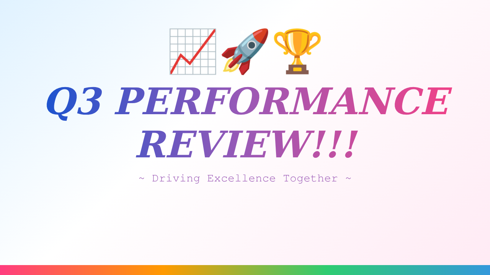
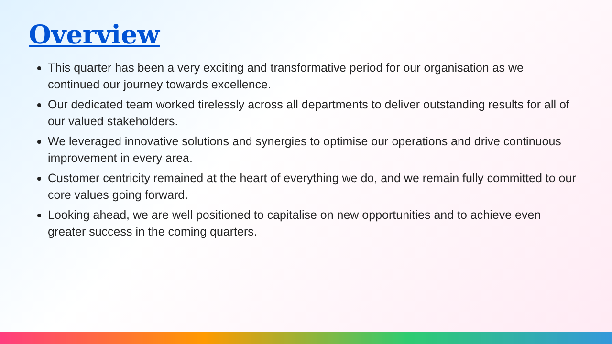
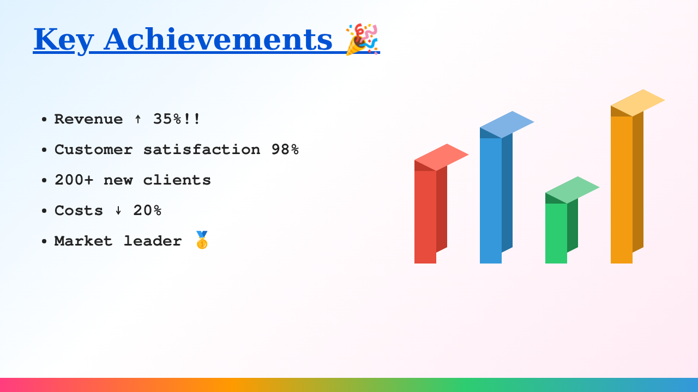
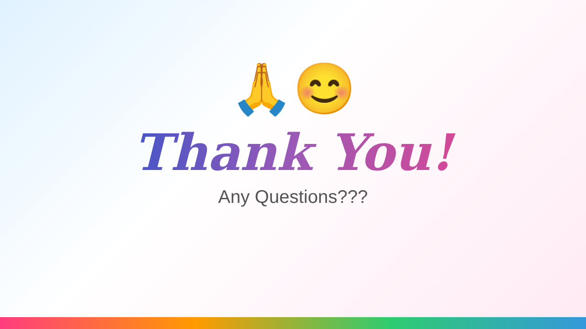
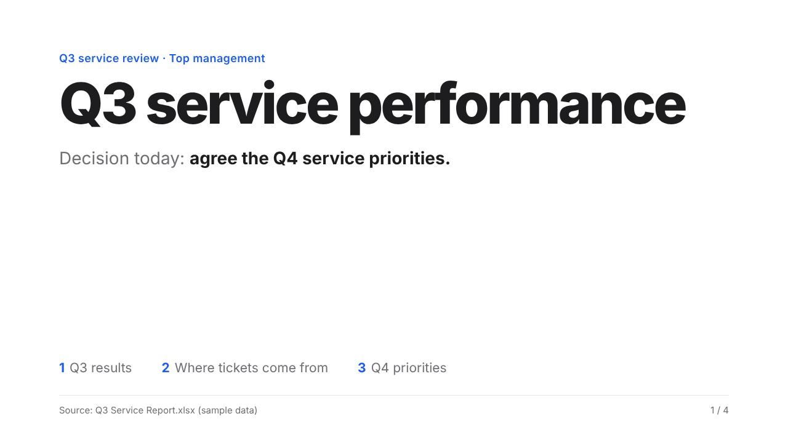
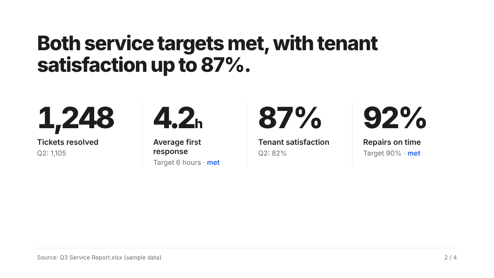
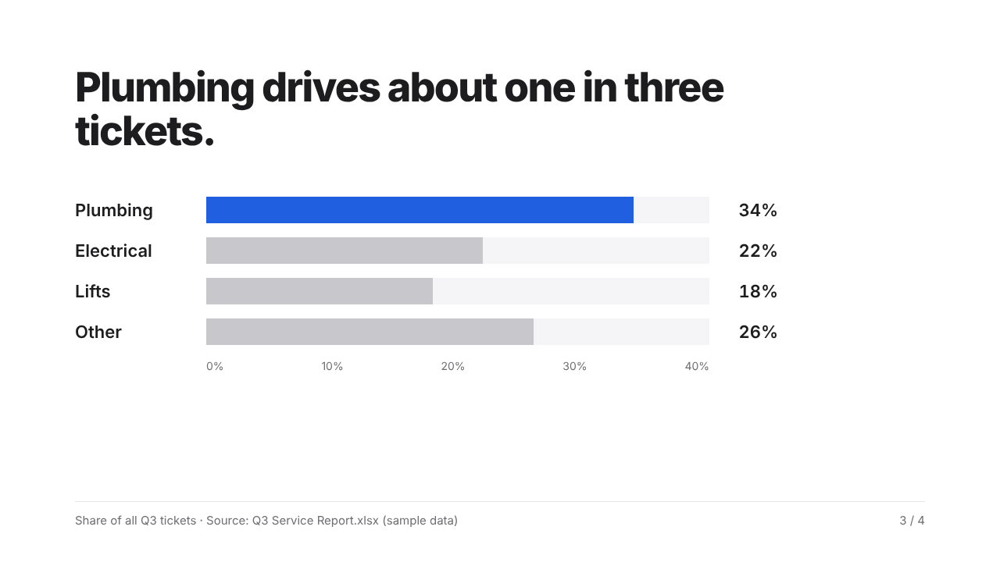
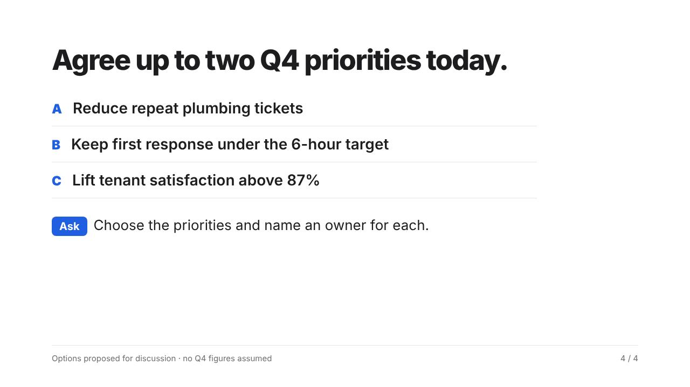

Same request. Two prompts.
Slides: Q3 service review for top management

AI Sandbox Prompt Vault
✕ Without a proper prompt
"Make a presentation about our Q3 performance."
✓ With the Prompt Vault
Role Top Management Consultant · Audience Top Management · Tone Executive · Style Minimalism · 4 slides · Goal agree Q4 priorities · Data Q3 Service Report.xlsx · + Testing & Quality




1
2
3
4
5
- 1Decorative title slide with no message
- 2Wall of text: five long sentences and no facts
- 3Invented figures (revenue +35%, 98%). None were given
- 43D bar chart with no labels or axis
- 5Ends with "Thank you". No decision asked




1
2
3
4
5
6
- 1The decision needed is stated up front
- 2Each headline is the key message
- 3Real figures from your file, with targets
- 4One honest chart on a true 0–40% scale
- 5Ends with a clear ask and owners
- 6Source and slide number on every slide
Illustrative example with sample data. Left: typical problems when a vague prompt gives the AI nothing to work with. Right: built by following the full Prompt Vault prompt (Slides › Create Slides).